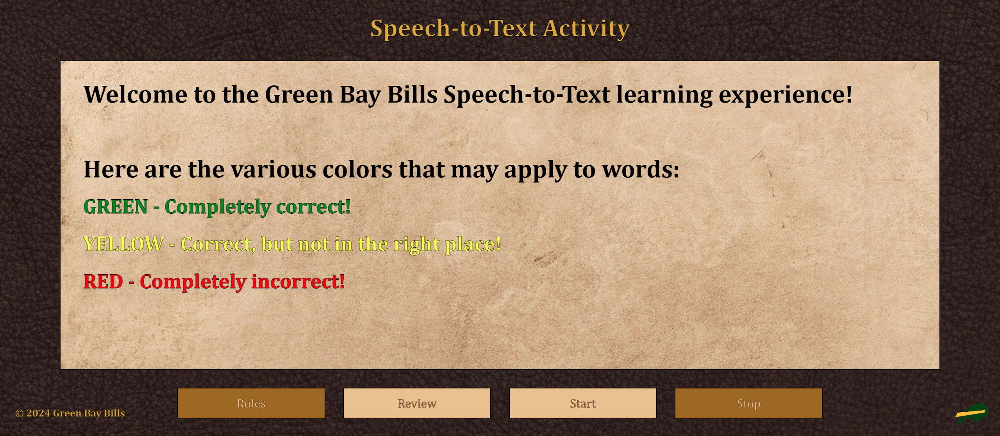
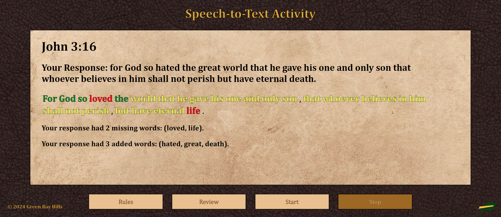

User Document
Developed by: Trent Repass and Nathan Klimt
Below is the user documentation for the Speech-to-Text Bible Memorization activity.
(NOTE: Application doesn't work in Firefox or Micrtosoft Edge browsers.)
Overview of Application
This Speech-to-Text activity is part of a larger application designed to help users better memorize passages
of scripture. If this activity is selected by the user in this larger application, they will be tasked to simply speak
their desired verse into whatever device they are using and thus be graded on how well they recited the excerpt. The use
of this web app has been developed to be as easy to use as possible. Hopefully, this document will help troubleshoot
any problems a user may have while interacting with the app.
The basic "loop" of the application is as follows:
1. The user begins by being shown the rules of how their speech will be evaluated.
2. The user can then choose to either review the current verse being worked on or skip this and begin reciting if the verse is already known.
3. The user speaks into the device running the app (their speech is dynamically displayed back to them as they're talking).
4. After selecting the "Stop" button the user is evaluated on the accuracy of their speech according to the rules shown in step 1.
5. The user can repeat steps 2-4, as well as review the rules, as long as they are not in the process outlined in steps 3 and 4.
General App Layout
As we can see from the start, this app is largely navigated through an interface consisting of four labeled buttons: "Rules", "Review Verse", "Start", and "Stop."
These buttons will automatically become disabled or enabled when they become useful or irrelevant to the user in different situations. The first two buttons
are "primer pages" of sorts where the user receives information and the other two buttons are used to control the activity itself once
it is running. Below you can find more in-depth descriptions of each button's functionality.
Rules Page

This page is the first page seen by the user, a "home" page of sorts. It simply displays the rules of the activity, making the user aware of how
the color-coded grading system used by the application works. From this page, you can choose to either navigate into the "Review Verse" button
or the "Start" button.
Review Verse Page
 This page displays the verse currently being worked on within the larger application and gives the user a chance to look it over before actually
reciting it. The user is not required to visit this page before starting the activity. There is also a volume cone button that displays on this page that,
when pressed, will tell the application to read the verse to the user to clear up any pronunciation problems.
This page displays the verse currently being worked on within the larger application and gives the user a chance to look it over before actually
reciting it. The user is not required to visit this page before starting the activity. There is also a volume cone button that displays on this page that,
when pressed, will tell the application to read the verse to the user to clear up any pronunciation problems.
Start Button
 When this button is pressed, the application is primed to be given user speech input. The user must speak clearly and concisely with minimal pause or the application will
think the user has stopped speaking. During this process, the application will dynamically display what it is hearing back to the user as they are speaking. In order to submit the response
for grading, the user must press the "Stop" button.
When this button is pressed, the application is primed to be given user speech input. The user must speak clearly and concisely with minimal pause or the application will
think the user has stopped speaking. During this process, the application will dynamically display what it is hearing back to the user as they are speaking. In order to submit the response
for grading, the user must press the "Stop" button.
Stop Button

After the user is done inputting their speech, or after they have paused too long and the application stops taking input on its own, the user must press the "Stop" button to
tell the app to calculate and display their results. The results displayed will be according to the rules outlined on the "Rules" button page. From here, the user can decide to
enter the "Review Verse" or "Rules" menus again or simply select the "Start" button again and relaunch the speech recognition process.